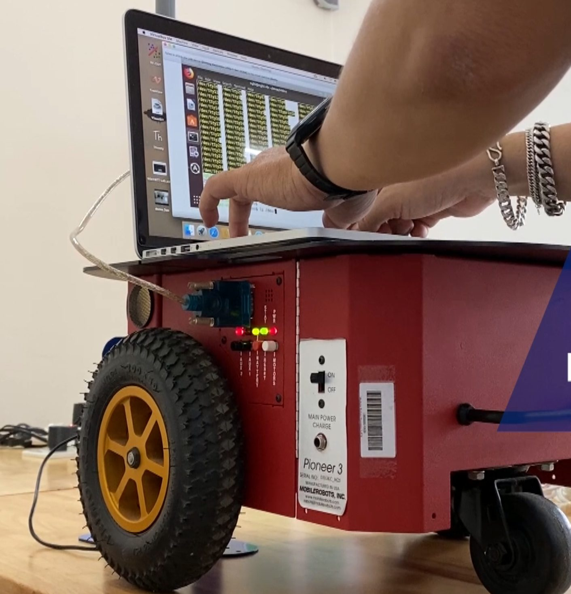
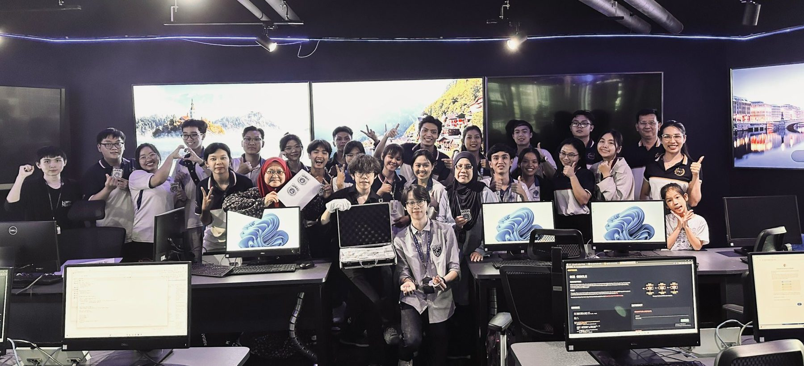
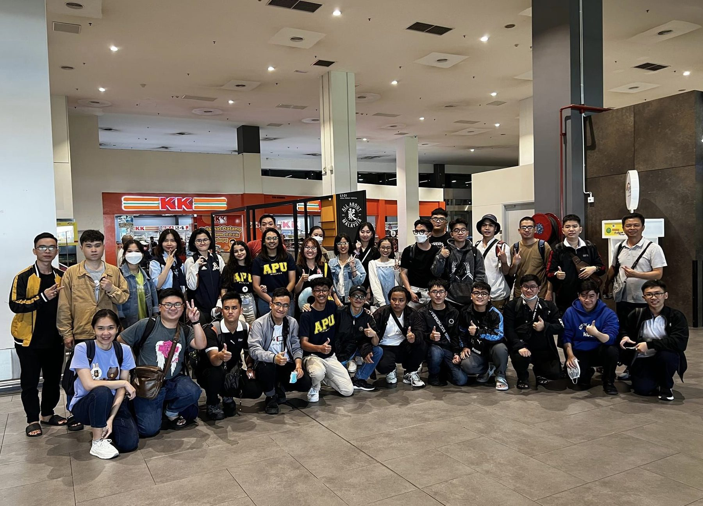
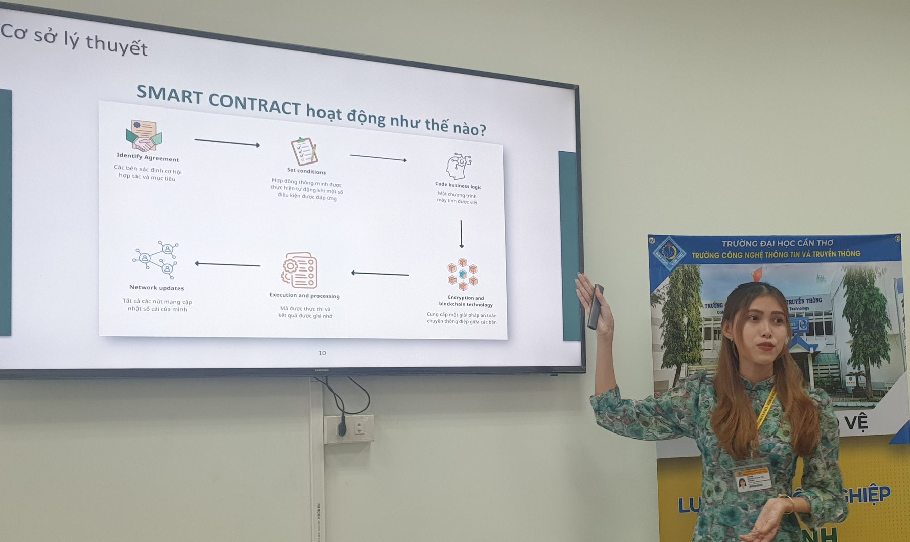

Engineer in Information Security
Programme code 7480202 · 161 credits · 4.5 years · System security, network security, cryptography and digital forensics
Introduction video of the Information Security programme
About the programme
The Information Security programme provides students with the capability of protecting digital information, information systems and computer networks; preventing and detecting illegal access, modification, distribution, destruction and attacks on an organisation's information system; proposing security solutions and carrying out monitoring, assessment and verification of information security; and handling incidents related to system security.
Students are equipped with the knowledge and skills required in data privacy, security and integrity, information systems and computer networks; in-depth knowledge of cryptographic techniques, operating system and database security, security of web and Internet applications, security in electronic transactions and e-commerce, network attack and intrusion techniques, protection models and defence techniques against intrusion attacks; the ability to analyse and assess situations; programming skills and proficiency with advanced security tools; and practice with real-life scenarios for the prevention, detection and blocking of system attacks.


Programme structure
A total of 161 credits, of which 121 are compulsory and 40 elective. The programme was promulgated under Decision No. 3268/QĐ-ĐHCT dated 23 June 2026 of the Director of Can Tho University.
| Knowledge block | Credits | Compulsory | Elective |
|---|---|---|---|
| General education | 56 | 41 | 15 |
| Disciplinary foundation | 46 | 46 | 0 |
| Specialisation | 59 | 34 | 25 |
| Total | 161 | 121 | 40 |
Study plan by semester
The standard study plan of the Information Security programme spans 13 semesters over 4.5 years (three semesters a year), as set out in the programme specification applied from Cohort 51. Each semester heading gives its total credits; for electives, students choose courses up to that semester's elective credits. Semester 10 offers two tracks: 10 credits from track N1 (Security and system administration) or N2 (Secure application development). Underlined course codes link to the course syllabus (PDF, in Vietnamese).
(*) Non-credit requirements, not counted in the cumulative grade average; they may be met by certificate under Can Tho University regulations. Students take either English or French. Curricula of earlier cohorts: Curricula by cohort.

